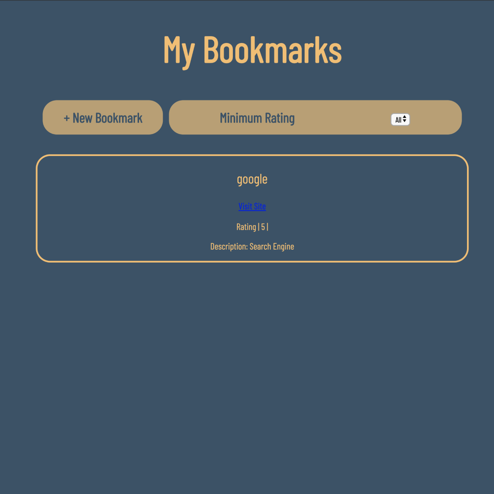

About Me
My earliest memory of being captivated by the world of technology dates back to middle school when I was gifted a computer for my birthday. I found myself absorbed with intrigue and would spend hours trying to crack the code to its endless puzzles. Since then my career has been wide and varied, ranging from being a children’s director of a non-profit to a freelance graphic designer to a Technical Expert then Genius at Apple. Along the way, I’ve picked up skills and insights that have forged my path back to computers, ultimately leading to me becoming a developer. While working for the non-profit, unsurprisingly, I was a one-man-band. I taught myself Adobe Photoshop, After Effects, and Premiere. That self-driven learning experience uniquely prepared me for the world of coding where I can contribute to building something from the ground up. From here, I’m ready to move into a growing field where I can be challenged and invigorated by the work created or produced.
My Work
My BookmarksApp
This is an app for creating and managing a personal list of bookmarks. This app was developed from scratch using vanilla Javascript and Jquery. This accesses an API and implaments Ajax concepts and a11y best practices.
GitHub Repo Live Site